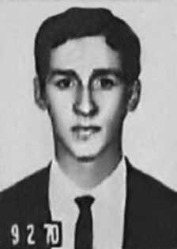

Ismael
Silva
de Jesus
CIRCUNSTÂNCIAS DA MORTE
Ismael Silva de Jesus morreu em 9 de agosto de 1972, um dia após ter sido levado preso para o 10º Batalhão de Caçadores de Goiás (atual 42º BIMtz), comandado à época pelo coronel Eni de Oliveira Castro.
Durante o curto período em que esteve preso, há comprovação de que sofreu violentas torturas, fato confirmado, inclusive, por testemunhas diretas. Logo após sua morte, em nota publicada no jornal O Popular, de 11 de agosto, o comandante do 10º Batalhão de Caçadores, coronel Eni de Oliveira Castro, comunicou a morte por suicídio do estudante e a abertura de um Inquérito Policial Militar (IPM) para apurar as circunstâncias do ocorrido em dependências militares.
A Secretaria de Segurança Pública de Goiás providenciou o exame pericial, realizado pela Polícia Técnica, e o exame necroscópico, feito pela Divisão de Medicina Legal. O exame necroscópico, assinado pelos legistas Antônio Carlos Curado e Jerson Cunha, registra como causa de morte asfixia mecânica por enforcamento. Nos termos do resumo produzido pelo Núcleo de Goiânia do Serviço Nacional de Informações (SNI), consta do laudo: “a – que o cadáver não apresentava nenhuma equimose ou escoriações e que o corpo se achava suspenso por cordões semelhantes aos usados nas persianas, sendo notada a falta do referido cordão na persiana de um dos aposentos do quartel; b – que foi encontrado no cadáver apenas o sulco duplo proveniente do enforcamento pelo cordão; c – que a morte do epigrafado foi causada por enforcamento, por ele mesmo praticado”.
Na falsa versão apresentada, Ismael teria se suicidado por vergonha de estar preso. Nos termos do relatório do encarregado do inquérito, que apurou as circunstâncias da morte de Ismael, capitão Ivan Vaz de Campos: “conclui-se […] que realmente houve suicídio, tendo participação apenas do referido cidadão ISMAEL SILVA DE JESUS. Que pode-se atribuir o motivo a um problema de consciência ao apontar pessoas a ele ligadas por laços de parentesco e afetivos ou em outra hipótese recear represálias de elementos ligados ao Partido Comunista Brasileiro por ele apontados, ou ainda para se furtar ao comprometimento de outros elementos por ele ainda não citados”.
Em 1972, o Exército e o Departamento de Polícia Federal em Goiás (DPF/GO) fechavam o cerco contra o PCB em Goiás. Em maio, os órgãos de segurança monitoraram a conferência municipal do partido, realizada dia 21, em Goiânia, tendo tomado conhecimento do resultado de todas as deliberações da reunião, inclusive, das que redundaram na nova composição do Comitê Municipal, para o qual Ismael fora eleito.
Pouco tempo depois, em meados de julho, foi desencadeada a operação para desmantelar o PCB no estado. Na ocasião, pelo menos oito pessoas do Comitê Municipal em Goiânia foram presas – dentre elas, Ismael Silva de Jesus. Segundo Paulo Silva de Jesus, seu irmão Ismael foi preso em 12 de julho e mantido incomunicável. Nesse mesmo mês, foi apreendido material de militância do PCB na residência de Ismael Silva de Jesus.
Em 17 de julho, o DPF/GO comunicou o resultado geral da operação de desmantelamento do PCB no Estado às autoridades militares do Exército, com destaque para o general Antônio Bandeira, da 3ª Brigada de Infantaria, com sede em Brasília, que “tomou, pessoalmente, contato com o problema e adiantou estar inclinado a instaurar, inicialmente, dois IPMs para o enquadramento legal dos implicados”. A documentação não esclarece se Ismael foi mantido, desde o início de sua prisão, no 10º BC.
Certo é que, desde o dia 12 de julho, constam alguns depoimentos por ele prestados ao DPF, órgão responsável por sua prisão. Nesse período, ele esteva à disposição da Justiça Militar, respondendo ao IPM instaurado pelo Comando Militar do Planalto e 11ª Região Militar, para apurar suas atividades no PCB de Goiânia. Além do interrogatório do dia 12, Ismael foi interrogado pela Polícia Federal em, pelo menos, duas outras oportunidades: 21 de julho e 8 de agosto, um dia antes de sua morte no 10º BC.
O corpo de Ismael foi encontrado por volta das 18h15 do dia 9 de agosto pelo terceiro-sargento José Manoel Pereira, chefe da guarda, sendo o fato testemunhado por outros três soldados: Ciron, encarregado do serviço de jantar, e Robson e José, que faziam a segurança no local. A ocorrência foi imediatamente comunicada às autoridades superiores do 10º BC, inclusive ao comandante da unidade e ao major Rubens Robine Bezerril, encarregado do IPM que apurava as atividades do PCB em Goiânia.
Paulo Silva de Jesus, irmão de Ismael, relatou à CNV, em 18 de outubro de 2013, que o corpo do irmão apresentava sinais evidentes de tortura quando foi entregue pelo Exército à família. O corpo foi velado na casa dos familiares, com a presença de militares à paisana, que também vigiaram o enterro. As unhas da mão esquerda de Ismael estavam cravadas na palma da mão, o que pode indicar o sofrimento causado pelos choques elétricos sofridos nas sessões de tortura. Além disso, a orelha direita estava enegrecida, a fronte manchada de hematomas e o olho direito vazado.
Em depoimento prestado à CNV, Aguinaldo Lázaro Leão, amigo de infância de Ismael, militante do PCB e em serviço militar no 10º BC, relatou que passou por acareação, encapuzado, com o estudante, e que chegou a trocar algumas palavras com o amigo. O militar afirmou que a voz de Ismael estava rouca e fraca. Ismael mencionou que havia sido torturado e contou que seu braço parecia fraturado. Em fins de julho, Aguinaldo foi preso e acabou sendo levado para o Pelotão de Investigações Criminais (PIC), em Brasília.
João Silva Neto, vereador pelo PCB em Goiânia, preso em 14 de julho, também relatou à CNV que, numa madrugada, foi acareado com Ismael. Diferentemente de outras acareações por que passou, nesse caso, João Silva estava encapuzado, o que pode indicar, segundo o próprio depoente, que o estado de Ismael era tal que não se permitia que o vissem. Finalmente, Mauro Curado Brom, preso em 13 de abril de 1969, testemunhou à CNV que outro preso político, de nome Tibúrcio, já falecido, teria lhe confidenciado que Ismael morreu do seu lado – o que afasta por completo a admissibilidade da versão de suicídio.
A revista Veja, de 22 de maio de 1991, em matéria baseada em fotos periciais do corpo de Ismael, encontradas no Instituto Médico Legal de Goiânia por Waldomiro Antônio de Campos Batista, o Mirinho, também contesta a versão oficial. Nas fotos localizadas, Ismael aparece sentado, com o corpo encostado à parede, e tendo o pescoço atado por uma frágil corda de persiana presa a um porta-toalhas de louça. Nos termos da reportagem: “Não é impossível, tecnicamente, que alguém se enforque nessa posição. É preciso, no entanto, fazer um bom serviço. A pessoa tem de amarrar a ponta de uma corda em ponto alto e bem firme, sentar-se, amarrar a outra ponta de uma corda em um ponto alto e dar um salto acrobático para frente. O difícil é explicar como o corpo vai parar exatamente sentado, encostado a uma parede, e a persiana se mantém intacta, como mostram as fotografias.”
A cena fica ainda mais inverossímil se for considerado que, antes de Ismael morrer, fora submetido a uma violenta sessão de torturas e espancamentos, encontrando-se impossibilitado de fazer tal ginástica. Pelos elementos colhidos, conclui-se que Ismael Silva de Jesus morreu em decorrência das torturas sofridas, vindo a falecer em 9 de agosto de 1972 no 10º Batalhão de Caçadores. Os depoimentos prestados à CNV em Goiânia (GO), na sede do Sindicato dos Jornalistas no Estado de Goiás, em 18 de outubro de 2013, permitiram identificar parcialmente alguns torturadores do 10º BC, mesmo que não ligados diretamente à morte de Ismael.
São eles: major Rubens Robine Bizerril, oficial da 3ª Brigada de Infantaria e encarregado do IPM que apurou as atividades dos comitês municipais do PCB em Goiás; capitão Ailton; capitão Dourado; sargento Marco; e os policiais Xavier e Clemilton, da Polícia Federal em Goiás.
Ismael Silva de Jesus died on August 9, 1972, one day after being arrested by the 10th Battalion of Hunters of Goiás (currently 42nd BIMtz), commanded at the time by Colonel Eni de Oliveira Castro.
During the short period in which he was imprisoned, there is evidence that he suffered violent torture, a fact confirmed even by direct witnesses. Shortly after his death, in a note published in the newspaper O Popular, on August 11, the commander of the 10th Hunter Battalion, Colonel Eni de Oliveira Castro, announced the student's death by suicide and the opening of a Military Police Inquiry (IPM) to investigate the circumstances of what happened on military premises.
The Goiás Public Security Secretariat provided the expert examination, carried out by the Technical Police, and the necroscopic examination, carried out by the Legal Medicine Division. The necroscopic examination, signed by coroners Antônio Carlos Curado and Jerson Cunha, records mechanical asphyxiation due to hanging as the cause of death. According to the summary produced by the Goiânia Center of the National Information Service (SNI), the report states: “a – that the corpse did not present any bruises or abrasions and that the body was suspended by cords similar to those used in blinds, with the lack of said cord being noted in the blind of one of the barracks' rooms; b – that only the double groove resulting from the hanging by the cord was found on the corpse; c – that the death of the above was caused by hanging, which he himself carried out”.
In the false version presented, Ismael would have committed suicide out of shame at being imprisoned. According to the report of the person in charge of the investigation, who investigated the circumstances of Ismael's death, Captain Ivan Vaz de Campos: "it is concluded [...] that there really was suicide, with the participation only of the aforementioned citizen ISMAEL SILVA DE JESUS. That the reason can be attributed to a problem of conscience when pointing out people linked to him by kinship and emotional ties or in another hypothesis to fear reprisals from elements linked to the Brazilian Communist Party appointed by him, or even to escape to the compromise of other elements not yet mentioned by him”.
In 1972, the Army and the Federal Police Department in Goiás (DPF/GO) closed the siege against the PCB in Goiás. In May, security bodies monitored the party's municipal conference, held on the 21st, in Goiânia, having learned the result of all the deliberations of the meeting, including those that resulted in the new composition of the Municipal Committee, to which Ismael had been elected.
Shortly afterwards, in mid-July, the operation was launched to dismantle the PCB in the state. On that occasion, at least eight people from the Municipal Committee in Goiânia were arrested – among them, Ismael Silva de Jesus. According to Paulo Silva de Jesus, his brother Ismael was arrested on July 12 and held incommunicado. That same month, PCB militant material was seized at the residence of Ismael Silva de Jesus.
On July 17, the DPF/GO communicated the general result of the operation to dismantle the PCB in the State to the military authorities of the Army, with emphasis on General Antônio Bandeira, from the 3rd Infantry Brigade, based in Brasília, who “was personally in touch with the problem and said he was inclined to initially establish two IPMs for the legal classification of those involved”. The documentation does not clarify whether Ismael was kept, since the beginning of his imprisonment, in the 10th BC.
What is certain is that, since July 12th, there are some statements he gave to the DPF, the body responsible for his arrest. During this period, he was at the disposal of the Military Justice, responding to the IPM established by the Military Command of Planalto and the 11th Military Region, to investigate his activities in the PCB of Goiânia. In addition to the interrogation on the 12th, Ismael was interrogated by the Federal Police on at least two other occasions: July 21st and August 8th, the day before his death on the 10th BC.
Ismael's body was found at around 6:15 pm on August 9 by third sergeant José Manoel Pereira, head of the guard, and the fact was witnessed by three other soldiers: Ciron, in charge of dinner service, and Robson and José, who provided security at the site. The incident was immediately reported to the higher authorities of the 10th BC, including the unit commander and Major Rubens Robine Bezerril, in charge of the IPM that investigated the PCB's activities in Goiânia.
Paulo Silva de Jesus, Ismael's brother, reported to the CNV, on October 18, 2013, that his brother's body showed obvious signs of torture when it was handed over by the Army to the family. The body was laid to rest at the family home, with the presence of military personnel in plain clothes, who also watched the burial. The nails on Ismael's left hand were dug into his palm, which may indicate the suffering caused by the electric shocks suffered during the torture sessions. Furthermore, the right ear was blackened, the forehead was stained with bruises and the right eye was hollowed out.
In a statement given to the CNV, Aguinaldo Lázaro Leão, a childhood friend of Ismael, a member of the PCB and in military service in the 10th BC, reported that he faced a confrontation, hooded, with the student, and that he even exchanged a few words with his friend. The soldier stated that Ismael's voice was hoarse and weak. Ismael mentioned that he had been tortured and said that his arm appeared to be fractured. At the end of July, Aguinaldo was arrested and ended up being taken to the Criminal Investigations Squad (PIC), in Brasília.
João Silva Neto, councilor for the PCB in Goiânia, arrested on July 14, also reported to the CNV that, one morning, he was confronted by Ismael. Unlike other confrontations he experienced, in this case, João Silva was hooded, which may indicate, according to the deponent himself, that Ismael's condition was such that he was not allowed to be seen. Finally, Mauro Curado Brom, arrested on April 13, 1969, testified to the CNV that another political prisoner, named Tibúrcio, now deceased, had confided in him that Ismael died by his side – which completely rules out the admissibility of the suicide version.
Veja magazine, on May 22, 1991, in an article based on forensic photos of Ismael's body, found at the Instituto Médico Legal de Goiânia by Waldomiro Antônio de Campos Batista, known as Mirinho, also disputes the official version. In the photos located, Ismael appears sitting, with his body leaning against the wall, and his neck tied by a fragile blind rope attached to a dish towel holder. According to the report: "It is not impossible, technically, for someone to hang themselves in this position. It is necessary, however, to do a good job. The person has to tie the end of a rope at a high point and very firmly, sit down, tie the other end of a rope at a high point and do an acrobatic leap forward. The difficult thing is to explain how the body ends up sitting exactly, leaning against a wall, and the blind remains intact, as shown in the photographs."
The scene becomes even more implausible if one considers that, before Ismael died, he was subjected to a violent session of torture and beatings, finding himself unable to perform such gymnastics. From the elements collected, it is concluded that Ismael Silva de Jesus died as a result of the torture he suffered, passing away on August 9, 1972 in the 10th Hunter Battalion. The statements given to the CNV in Goiânia (GO), at the headquarters of the Journalists' Union in the State of Goiás, on October 18, 2013, made it possible to partially identify some torturers from the 10th BC, even if they were not directly linked to Ismael's death.
They are: Major Rubens Robine Bizerril, officer of the 3rd Infantry Brigade and in charge of the IPM who investigated the activities of the PCB municipal committees in Goiás; captain Ailton; captain Dourado; Sergeant Marco; and police officers Xavier and Clemilton, from the Federal Police in Goiás.
Ismael Silva de Jesús murió el 9 de agosto de 1972, un día después de ser detenido por el 10º Batallón de Cazadores de Goiás (actualmente 42º BIMtz), comandado en ese momento por el coronel Eni de Oliveira Castro.
Durante el corto período que estuvo encarcelado, hay indicios de que sufrió violentas torturas, hecho confirmado incluso por testigos directos. Poco después de su muerte, en una nota publicada en el diario O Popular, el 11 de agosto, el comandante del 10º Batallón de Cazadores, coronel Eni de Oliveira Castro, anunció la muerte del estudiante por suicidio y la apertura de una Investigación de la Policía Militar (IPM) para investigar las circunstancias de lo ocurrido en instalaciones militares.
La Secretaría de Seguridad Pública de Goiás dispuso el peritaje, realizado por la Policía Técnica, y el examen necroscópico, realizado por la División de Medicina Legal. El examen necroscópico, firmado por los forenses Antônio Carlos Curado y Jerson Cunha, registra como causa de la muerte la asfixia mecánica por ahorcamiento. Según el resumen elaborado por el Centro de Goiânia del Servicio Nacional de Información (SNI), el informe señala: “a – que el cadáver no presentaba contusiones ni abrasiones y que el cuerpo estaba suspendido por cuerdas similares a las utilizadas en las persianas, notándose la falta de dicha cuerda en la persiana de una de las habitaciones del cuartel; b – que sólo se encontró en el cadáver la doble ranura resultante del ahorcamiento por la cuerda; c – que la muerte del anterior fue causada por ahorcamiento, que él mismo llevaba fuera”.
En la versión falsa presentada, Ismael se habría suicidado por vergüenza de estar preso. Según el informe del responsable de la investigación, que investigó las circunstancias de la muerte de Ismael, Capitán Iván Vaz de Campos: "se concluye [...] que realmente hubo suicidio, con la participación únicamente del citado ciudadano ISMAEL SILVA DE JESÚS. Que el motivo puede atribuirse a un problema de conciencia al señalar a personas vinculadas a él por parentesco y vínculos afectivos o en otra hipótesis por temor a represalias por parte de elementos vinculados al Partido Comunista Brasileño designados por él, o incluso a escapar al compromiso de otros elementos aún no mencionados por él”.
En 1972, el Ejército y el Departamento de Policía Federal de Goiás (DPF/GO) cerraron el cerco contra el PCB en Goiás. En mayo, los cuerpos de seguridad siguieron la conferencia municipal del partido, celebrada el día 21, en Goiânia, y conocieron el resultado de todas las deliberaciones de la reunión, incluidas aquellas que desembocaron en la nueva composición del Comité Municipal, para el cual Ismael había sido elegido.
Poco después, a mediados de julio, se lanzó la operación para desmantelar el PCB en el estado. En esa ocasión, fueron arrestadas al menos ocho personas del Comité Municipal de Goiânia, entre ellas Ismael Silva de Jesús. Según Paulo Silva de Jesús, su hermano Ismael fue detenido el 12 de julio y mantenido incomunicado. Ese mismo mes se incautó material militante del PCB en la residencia de Ismael Silva de Jesús.
El 17 de julio, la DPF/GO comunicó el resultado general de la operación de desmantelamiento del PCB en el Estado a las autoridades militares del Ejército, con destaque para el general Antônio Bandeira, de la 3.ª Brigada de Infantería, con sede en Brasilia, quien “estuvo personalmente en contacto con el problema y dijo inclinarse por establecer inicialmente dos MIP para la clasificación jurídica de los involucrados”. La documentación no aclara si Ismael estuvo retenido, desde el inicio de su encarcelamiento, en el siglo X a.C.
Lo cierto es que, desde el 12 de julio, existen algunas declaraciones que dio al DPF, organismo responsable de su detención. Durante ese período, estuvo a disposición de la Justicia Militar, respondiendo al IPM establecido por el Comando Militar de Planalto y la 11ª Región Militar, para investigar sus actividades en el PCB de Goiânia. Además del interrogatorio del día 12, Ismael fue interrogado por la Policía Federal en al menos otras dos ocasiones: el 21 de julio y el 8 de agosto, el día antes de su muerte el 10 a.C.
El cuerpo de Ismael fue encontrado alrededor de las 6:15 de la tarde del 9 de agosto por el sargento tercero José Manoel Pereira, jefe de la guardia, y el hecho fue presenciado por otros tres militares: Ciron, encargado del servicio de cenas, y Robson y José, quienes brindaban seguridad en el lugar. El incidente fue inmediatamente denunciado a las autoridades superiores del 10º BC, entre ellas el comandante de la unidad y mayor Rubens Robine Bezerril, responsable del IPM que investigó las actividades del PCB en Goiânia.
Paulo Silva de Jesús, hermano de Ismael, denunció ante la CNV, el 18 de octubre de 2013, que el cuerpo de su hermano presentaba evidentes signos de tortura cuando fue entregado por el Ejército a la familia. El cuerpo fue enterrado en el domicilio familiar, con la presencia de militares vestidos de civil, que también presenciaron el entierro. Los clavos de la mano izquierda de Ismael estaban clavados en la palma de su mano, lo que puede indicar el sufrimiento causado por las descargas eléctricas sufridas durante las sesiones de tortura. Además, la oreja derecha estaba ennegrecida, la frente manchada de hematomas y el ojo derecho ahuecado.
En declaración dada a la CNV, Aguinaldo Lázaro Leão, amigo de infancia de Ismael, miembro del PCB y en servicio militar en el siglo X a.C., relató que enfrentó un enfrentamiento, encapuchado, con el estudiante, y que incluso intercambió algunas palabras con su amigo. El soldado afirmó que la voz de Ismael era ronca y débil. Ismael mencionó que había sido torturado y dijo que parecía tener el brazo fracturado. A finales de julio, Aguinaldo fue detenido y terminó siendo trasladado al Equipo de Investigaciones Criminales (PIC), en Brasilia.
João Silva Neto, concejal del PCB en Goiânia, detenido el 14 de julio, también denunció a la CNV que, una mañana, fue confrontado por Ismael. A diferencia de otros enfrentamientos que vivió, en este caso João Silva estaba encapuchado, lo que puede indicar, según el propio declarante, que el estado de Ismael era tal que no permitían ser visto. Finalmente, Mauro Curado Brom, detenido el 13 de abril de 1969, declaró ante la CNV que otro preso político, llamado Tibúrcio, ya fallecido, le había confiado que Ismael murió a su lado -lo que descarta por completo la admisibilidad de la versión suicida-.
La revista Veja, del 22 de mayo de 1991, en un artículo basado en fotografías forenses del cuerpo de Ismael, encontradas en el Instituto Médico Legal de Goiânia por Waldomiro Antônio de Campos Batista, conocido como Mirinho, también cuestiona la versión oficial. En las fotografías localizadas, Ismael aparece sentado, con el cuerpo apoyado contra la pared y el cuello atado por una frágil cuerda ciega atada a un toallero. Según el informe: "No es imposible, técnicamente, que alguien se ahorque en esta posición. Sin embargo, es necesario hacer un buen trabajo. La persona tiene que atar el extremo de una cuerda en un punto alto y muy firmemente, sentarse, atar el otro extremo de una cuerda en un punto alto y dar un salto acrobático hacia adelante. Lo difícil es explicar cómo el cuerpo termina sentado exactamente, apoyado contra una pared, y la persiana permanece intacta, como se muestra en las fotografías".
La escena se vuelve aún más inverosímil si se tiene en cuenta que, antes de morir, Ismael fue sometido a una violenta sesión de torturas y golpes, viéndose incapaz de realizar dicha gimnasia. De los elementos recabados se concluye que Ismael Silva de Jesús murió como consecuencia de las torturas que sufrió, falleciendo el 9 de agosto de 1972 en el Batallón de Cazadores 10. Las declaraciones dadas a la CNV en Goiânia (GO), en la sede del Sindicato de Periodistas del Estado de Goiás, el 18 de octubre de 2013, permitieron identificar parcialmente a algunos torturadores del siglo X a.C., aunque no estuvieran directamente relacionados con la muerte de Ismael.
Se trata del mayor Rubens Robine Bizerril, oficial de la 3.ª Brigada de Infantería y responsable del IPM que investigó las actividades de los comités municipales del PCB en Goiás; capitán Ailton; capitán Dorado; Sargento Marco; y los policías Xavier y Clemilton, de la Policía Federal de Goiás.